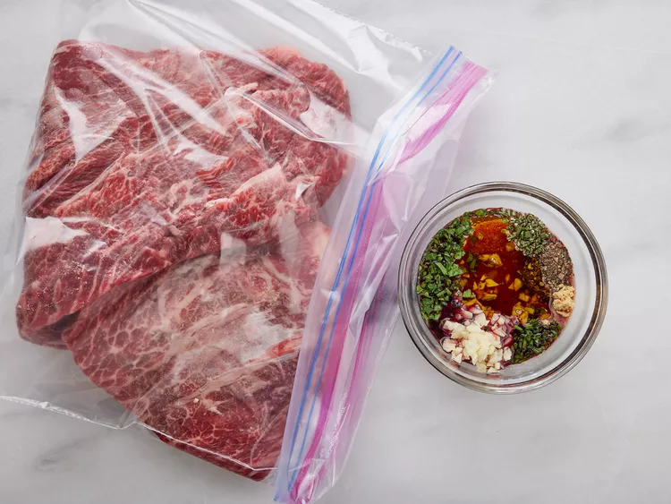
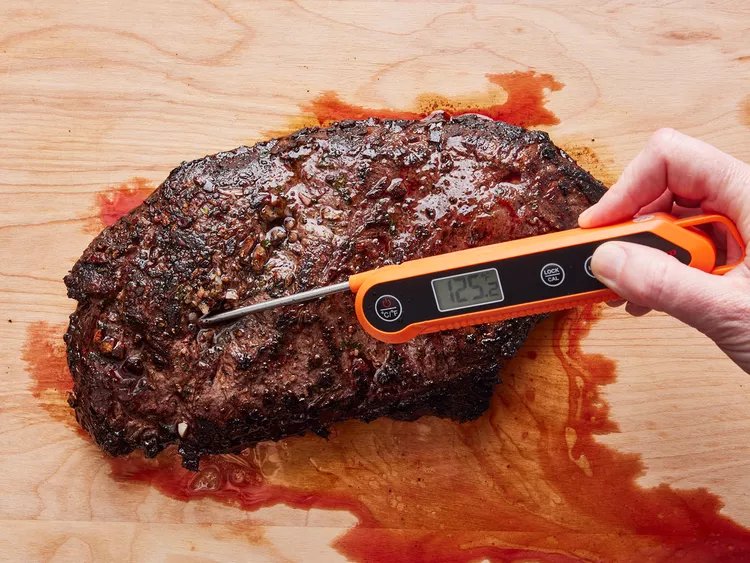
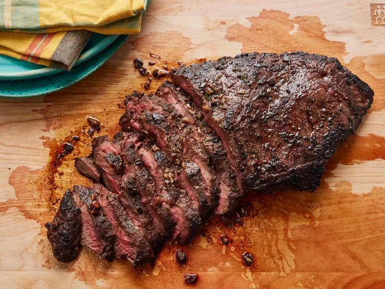

Perfect Flat Iron Steak
This recipe will teach you how to make a delicious flat iron steak sure to make your mouth water!
It is recommended to use only the freshest ingredients available to you.
Ingredients
- 1 (2 pound) flat iron steak
- 2 ½ tablespoons olive oil
- 2 cloves garlic, minced
- 1 teaspoon chopped fresh parsley
- ¼ teaspoon chopped fresh rosemary
- ½ teaspoon chopped fresh chives
- ¼ cup Cabernet Sauvignon (or other dry red wine)
- ½ teaspoon salt
- ¾ teaspoon ground black pepper
- ¼ teaspoon dry mustard powder
Steps
- Step 1: Place steak inside a large resealable bag. Stir olive oil, garlic, parsley, rosemary, chives, red wine, salt, pepper, and mustard powder together in a small bowl.

PHOTO: DOTDASH MEREDITH FOOD STUDIOS
- Step 2 Pour marinade over steak in the bag. Press out as much air as you can and seal the bag. Marinate in the refrigerator for 2 to 3 hours.

PHOTO: DOTDASH MEREDITH FOOD STUDIOS
- Step 3 Heat a nonstick skillet over medium-high heat. Sear and cook the steak in the hot skillet for 3 to 4 minutes on each side for medium rare, or to your desired degree of doneness. An instant-read thermometer inserted into the center should read 130 degrees F (54 degrees C) for medium rare.

PHOTO: DOTDASH MEREDITH FOOD STUDIOS

PHOTO: DOTDASH MEREDITH FOOD STUDIOS
>
- Step 4 Discard the marinade. Allow the steaks to rest for about 5 minutes before serving.

PHOTO: DOTDASH MEREDITH FOOD STUDIOS
Return to top
Return to main page